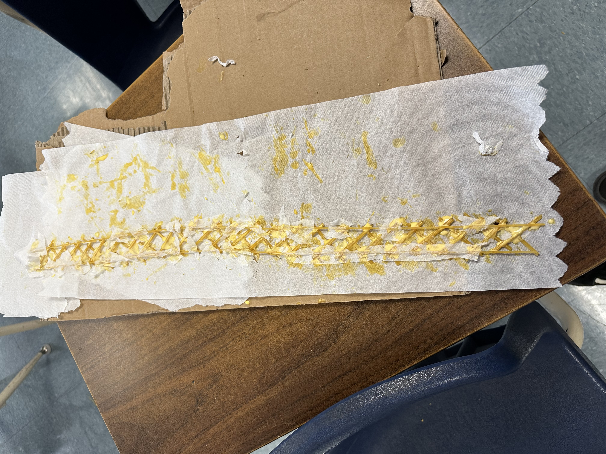
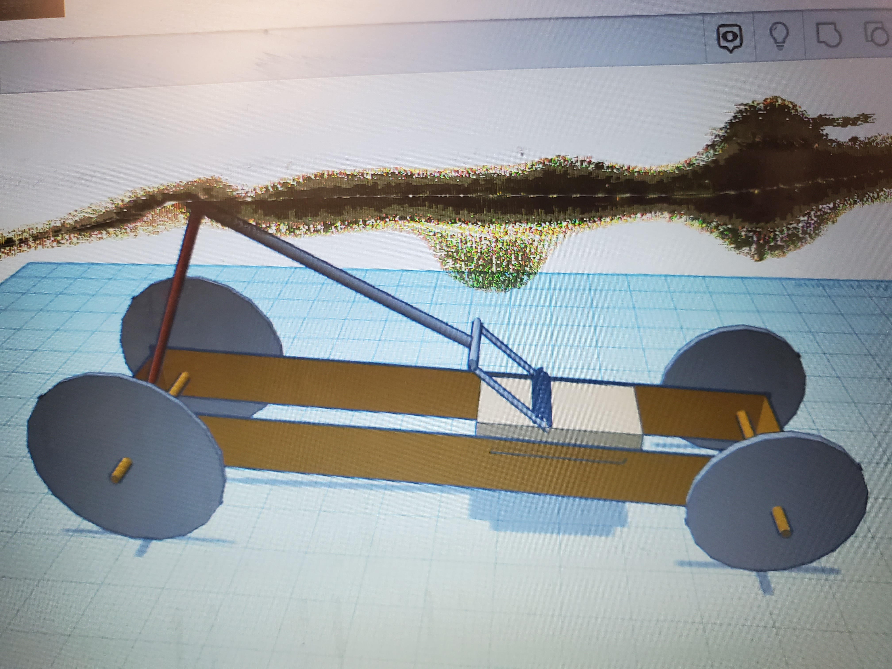
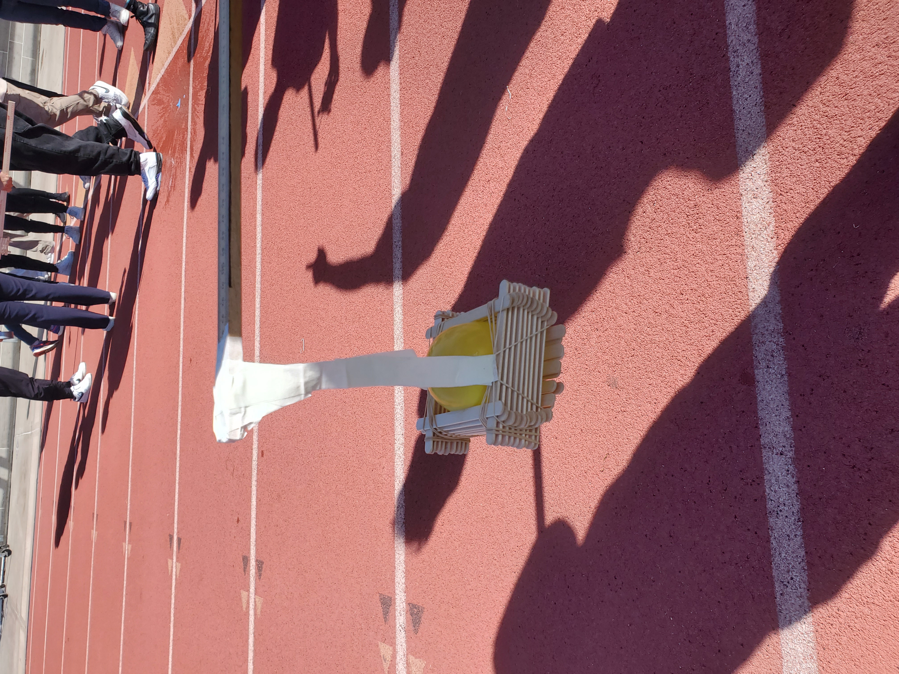
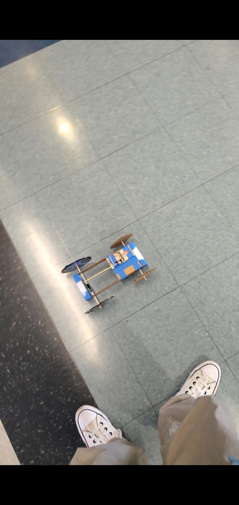
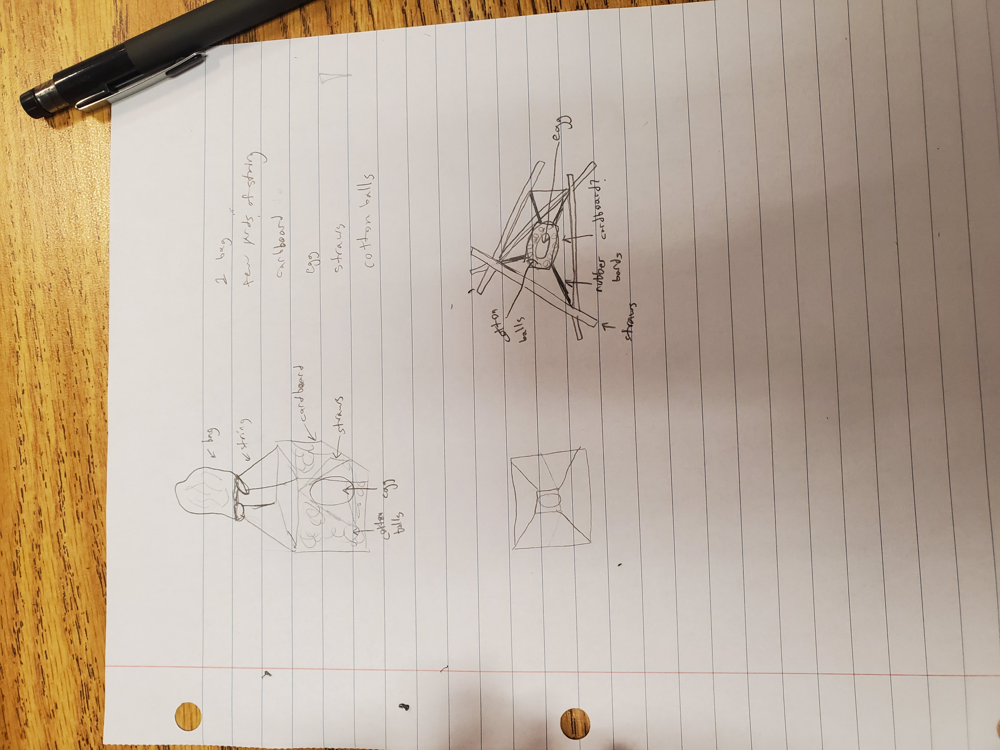
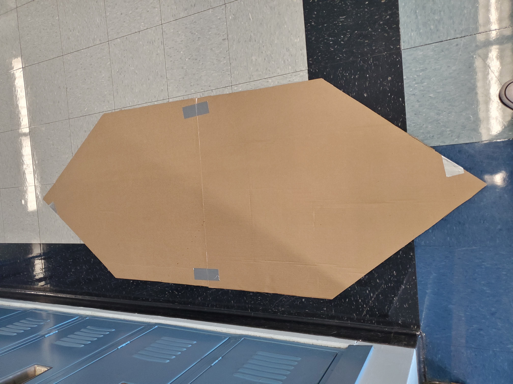
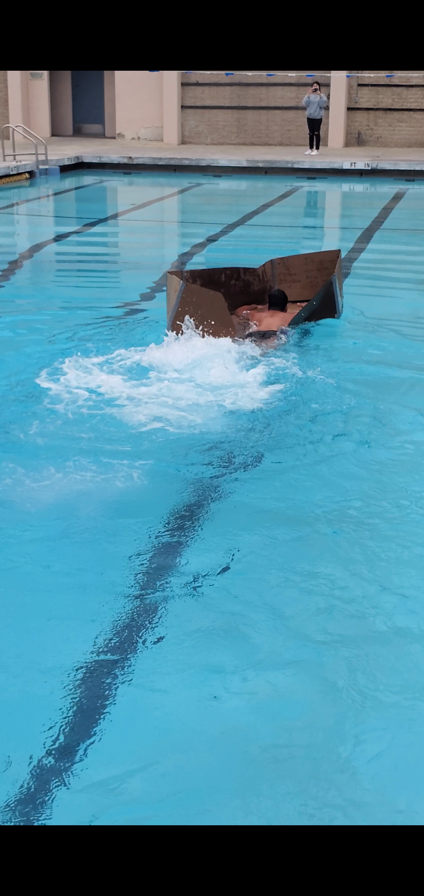

this is a paragraph
Click Me9/2/2022 - This week we learned about tinker cad and as our first assignment, we were told to make a kitchen appliance. I chose to make a blender. I think i did pretty well and i am excited for making the goldburg machine next week.
9/9/22 - This week we designed our rube goldburg machines. Alec, Armand, and Sebastian all desined their versions of their machines on tinker cad. i made mine with a ramp, a door, a pulley, and a seesaw type thing. It was very hard to put the different shapes perfectly. Although it was hard I managed to do it and I was able to finish the ramp and the door part.
9/5/22-9/16/22 - Last week we were told to design our rube goldburg machine so me and my table partners designed the machine on tinker cad. We eventually decided on my design and this week we started to build it out of cardboard. We are about 25% done and I am proud of the progress we have done. OH and for challenge day this week we made paper boats that are supposed to hold weights and we won with 90 grams on our boat yay...
9/19/22-9/23/22 - This week we did map testing. Also this week we finished our rube goldburg machine. It doesn't look the same as our tinker cad but it still has the same componenets just made differently. It worked on the 5th try. It didn't work 4 times because the needle wasn't reinforced enough and also there was too much friction on the top of the pulley.


9/26/22 - 9/30/22 - This week we dissected a laptop. It was very dusty and musty and crusty. The screws were hard to unscrew and my group helped me a lot. My hands were very dirty after and we also did a coloring worksheet. It was very hard to put it back together because I forgot what type of screws went in each hole.


10/3/22 - 10/7/22 - This week we had a zoom call with someone from Western Digital and he showed us a presentation about different types of engineering, careers, what he does, parts of an ssd, and his education. We also made a prosthetic in tinker cad but before we drew it on paper. I made a tiger/cat/dog prosthetic. Then on friday we made instructions to make a peanut butter and jelly sandwich. The sandwich lesson was about how computer engineering involves a lot of specific and accurate directions for coding.


10/10/22 - 10/13/22 - This week we learned about aero engineering. We were told that our new project will be to make a rocket with a bottle and other materials. We first drew our bottle rocket and then on wednesday we tinker caded it. For our challenge today we were told to make something that flies out of paper whether it was a plane or a ball that would hit a trashcan at the bottom of a two floor building. I think 2 people hit the trashcan in our class. Mine glided very very well but it went to the right and missed :( .


10/17/22 - 10/21/22 - This week we were told to plan, cad, and create bottle rockets. Our group planned the bottle rocket by drawing what it would look like and what materials they are made of. I was the one in my group who tinker caded the bottle rocket. We then created our bottle rockets with cardboard, a lot of tape, and two bottles. I cut off the top of the first bottle and put it on the bottom of the second bottle for the tip. We used cardboard for the fins and attached them with tape. We launched our rockets but it didn't work because the bottom wasn't straight.

10/24/22 - 10/27/22 - This week we learned out environmental engineering. We went over slides about what things that environmental engineers work on. We did a mini project that made a water filter using rocks, pebbles, sand, and cotton in a bottle for the filter. We put dirty water into the filter and it kind of worked. The water was clearer than before but it was still cloudy so it wasn't completely clean. For our challenge this week we had to figure out how many candy corns can fit on a piece of 8x11 paper. I did area of a square and found that 168 candy corn fit on the piece of paper.


10/31/22 - 11/4/22 - This week we learned about electrical engineering. We went through slides that explained voltage, resistance, and current. We also learned about ohms law and did a worksheet. We then went on tinker cad and caded circuits which were pretty fun and easy. we learned about resistors and leds in parrellel and in series.

11/7/22 - 11/10/22 - This week we worked on circuits in irl. We played with breadboards, wires, leds, resistors, and arduinos as a power source. It was fun to measure the voltage and the resistance using the voltage meter and wrote them down on a worksheet. We couldn't finish the worksheet so we will finish it next week. I used the breadboards to turn on leds in series, parrellels, and with using a button. Our challenge this week was a debate about if we would either take a math class or write the number 1 - 1,000,000 and the math class was the better choice.

11/14/22 - 11/18/22 - This week we learned how to code with an arduino. We learned how to use an arduino app/website to turn off and on an led by coding. By coding we also learned how to flicker leds in patterns. We also learned how to delay the flicker by using the code "delay(1000);". The challenge for this week was to see if we can find more door or wheels and I was on team wheels and destroyed the frick out of the door team.

11/28/22 - 12/2/22 - This week we were told that our final was to build a spaghetti bridge. I drew a prototype bridge and tinker caded it. We started gluing today and i don't know if it will work or not but its our first prototype so i dont really care that much. I started building the sides of the bridge and it takes a whole day for the wood glue to dry and I will test it next week.

12/5/22 - 12/9/22 - This week we had to build our spaghetti bridges. Our first version that we made broke because it was too rigid and the design wasn't going to work so I thought of another design and made it today. We had no challenge this week.
12/12/22 - 12/16/22 - This week we tested our bridges. Our group has made 2 versions of a bridge. We couldn't test our first bridge because it broke while trying to peel the spaghetti off the cardboard. We made a second version because I noticed that even if we managed to make the 1st version of the bridge, it would not be that strong. We tested our new bridge this week and it held 1 and a half cups but would've held 2 and a half if it didn't crack while taking it off the paper towel. We are currently making a third version and the final is on wednesday next week and I am excited.
12/19/22 - This was finals week. We built our final bridge which took a lot less longer than I thought because I already knew how to build it and I had a lot of help from Armand and Sebastian. We built it a lot straighter than last time which helped building the side supports. It was the same design as our 3rd iteration but theres a support beam in the middle. We are going to test it tomorrow and I hope it holds at least 2 and a half cups of water or more. Our bridge looks cool af.

12/20/22 - Today is the day we test our bridges. The bridge held 3 cups which was 1 and a half more cups that last time. We got a score of 55 out of something. Our group won best bridge. Our bridge was 23 grams and it held 1303 grams of water. We got a score of 56 and other bridges got 240 and 61 but they used a stick instead of an actual bridge so they were disqualified and we won. I am proud of our design and I think I will get an A on the final.

1/9/23 - 1/18/23 - Last week we did a thing kind of like shark tank. We came up with an invention to solve a problem to something and we had to share it to the class. We came up with an app that would scan your body and you would be able to put on clothes and see what you would look like without ever having to take clothes on and off. It is kind of like a real life bitmoji. Our targeted consumers are teens and young adults. This week we learned about chemical engineering and we had a challenge where we had to fix a cancerous lake.
1/23/23 - 1/27/23 - This week we were told that our semester projects are to either choose between a mousetrap car, an arduino car, or a civil engineering question about our school. Me and Armand(our group) decided to choose the mousetrap car. On the second week we were told to make a project proposal that should be at least 5 pages long. It took me and armand a decent amount of time to make it.
1/30/23 - 2/3/23 - This week we were told to tinker cad our mousetrap cars. It took me a good amount of time to make it because it was so tidious adjusting the parts. Me and armand decided that our mousetrap car would be at an angle like a dragster car so it was hard to implement that into our tinker cad.
1/6/23 - 1/10/23 - This week we started to build our mousetrap cars. I don't have a picture of it but I started to build the body with cardboard and it looks pretty stable and we used cds wrapped with electrical tape on the outside rim of it for the back tires. Our challenge this week was to create something that could hold a water balloon with only popsicle sticks and rubber bands attached to the end of a yard stick and run it across 100m. We didn't win but i'd argue that we had one of the most stable ones.
1/11/23 - 3/7/23 - These past months we have been building our projects. The first car took about 3 weeks to make because I was figuring out as i go. It took a day to make the body/chasis of the car and the wheels took 2 days because it was hard to find a way to make the axle move and not just the wheels. The arm part/engine mechanism was not hard to make. Armand helped me make the chasis stronger and the wheels. The first version worked pretty well but it didn't go straight. Being the perfectionist I am, I told armand i wanted to make another version of that car that goes straighter and is possible lighter. I made the chasis wider so that the arm on the mousetrap goes in the middle of the axle and used styrofoam that I found to make it lighter. I carefully made the wheels and the axles with armand. The second car took 2 days in total to make. I tested the car and it went straight but it had a slow start because the car was not that aerodynamic. We raced our cars and our car got second place.
3/21/23 - 3/24/23 - This week we were told that our next project is the egg drop challenge where you have to protect an egg from cracking when dropping from a high place. This wednesday we were told to draw our design on paper and on friday we cad it. It isn't our final design at all but it's a rough draft. UPDATE: It survived.

2/27/23 - 4/20/23 - These few weeks we have been planning our next project which is to make a cardboard boat with only cardboard and tape that can hold 2 people and go to the other side of the pool. Alec and I had a different plans and designs for our boat. We ended up by combining all the good parts of both of our boats together and decided that we were going to have an opening in the back to kick instead of paddling but we realized that it would just splash water into the boat since alec would be kicking and he's very energetic so. We also decided that Alec and Sebastian are going into the boat since me and Armand don't want to get wet. I'm not too confident in any boat to be honest because I watched this final happen last year and every single boat sank. Right now, me and Armand are building a mini prototype and I realized some design issues that i didn't realize until I built the mini one which was helpful. Oh and our boat will have planks in the middle of the inside of the boat kind of like a canoe which would help with floating and structure and strength. This will take a while to build but that is the fun of it.

4/24/23 - 4/28/23 - This week we started building. I built a prototype the week before this week and tested it and we learned that the walls of our boat needed to be taller. I wanted to build another protoype because we have a lot of time but i guess Alec and Armand want to build the final one early so we started building it. I haven't been helping much due to AP essay finals and studying for the AP exam. When the exam is over i will definitely putting more effort.
5/1 - 5/5 - This week we started to build the walls of the boat. We decided to make the walls 2.5 feet high. We encountered a problem which was that the tape that we got was kind of hard to rip and use. We still managed to use strips of duct tape to put the sides together. We then started to double layer the walls and the floor. I didn't get to build on friday because of ap testing but armand told me that we're basically almost done. I also didn't get to take a picture of the boat with the sides but will put a picture up of our boat next week.
5/8 - 5/12 - This week we learned that we are completely going to fail the boat test. Since Alec used most of the tape, we didn't have enough to cover the bottom. I started to decorate the boat with random warnings saying that the boat will drown. Me and Alec knew that the boat will sink so I recommended we use big slabs of cardboard for "lifeboats" so that Sebastian and Alec don't drown. This week's challenge was to make a paper rollar coaster. I think it was okay but could've been way better.
5/15 - 5/26 - This week we found out that our boat fell apart because Alec decided to put our boat on top of the rolls of foam for the cheerleaders which made the front and the back of the boat to fall. Thankfully, Mr. Poole gave us half a role of tape and since Alec's tape job was horrible before, we decided that I should be the one to do the taping. We ended up finishing on friday and the boat was successfully taped very well by Armand and me.
5/29 - 6/2 - We tested our boat. It failed. It floated but thanks to Sebastian, the boat basically folded in half but we aren't blaming him because Alec decided to wear a speedo and Sebastian didn't want to be seen in the same boat as him so he purposely jumped in which we and the teacher don't blame him for. It would've sank anyways because we didn't have enough time to layer our walls or the floor. It was fun to see which designs worked and didn't. Out of 3 classes, only 2 made it back and one of them were my friend's boat.
